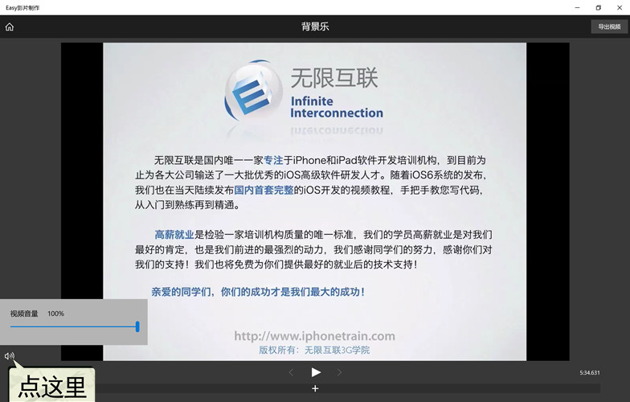
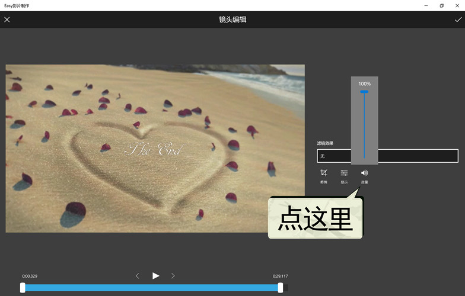
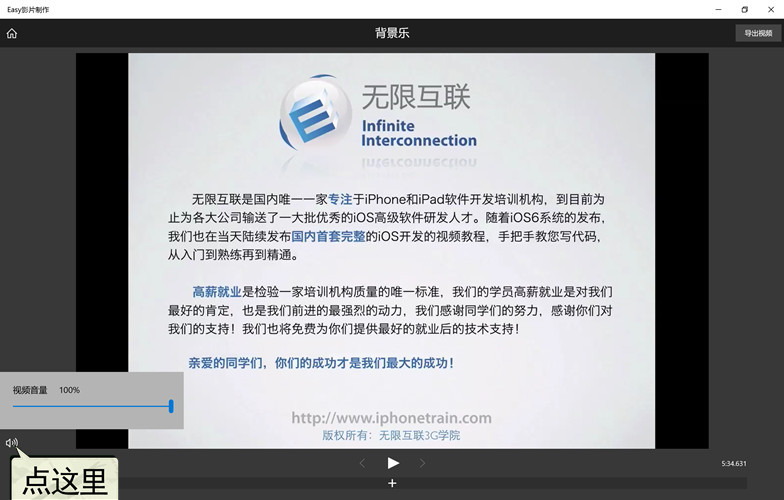
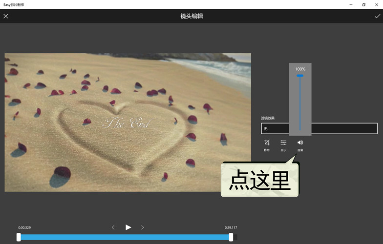

如何调节视频的原音？
有两种方式可调节视频的原始音量：
方法1、是从主界面点击“添加背景乐”进入编辑页面，点 调节视频音量。
调节视频音量。

图1：设置视频原音1
方法2、在项目模式中，进入“镜头编辑”页，点调节视频音量。

图2：设置视频原音2
有两种方式可调节视频的原始音量：
方法1、是从主界面点击“添加背景乐”进入编辑页面，点调节视频音量。

图1：设置视频原音1
方法2、在项目模式中，进入“镜头编辑”页，点调节视频音量。

图2：设置视频原音2